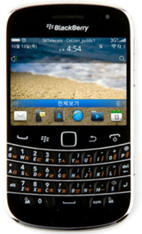
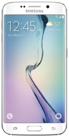
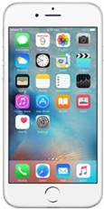
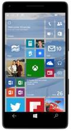

스마트폰은 컴퓨터를 결합한 무선 휴대전화기이다. PC에서 실행되는 운영체제보다 작게 만든 모바일 운영체제를 탑재하여 인터넷 검색, 전자우편, 간단한 문서 편집, 카메라, 오디오 및 비디오 재생 등 PC의 기능을 거의 모두 갖추고 있다.
최초의 스마트폰은 사이먼(Symon)으로 추정된다
안드로이드(영어: Android)는 휴대전화를 비롯한 휴대용 장치
아이폰(영어: iphone)은 2007년 1월9일, 애플이 발표한 휴대 전화 시리즈이다. 미국 샌프란시스코에서 열린 맥월드 2007에서 애플의 창업자 중 한명인 스티브 잡스가 발표했다.
|
 |  |  |  |
Copyright 2017 by Kitae